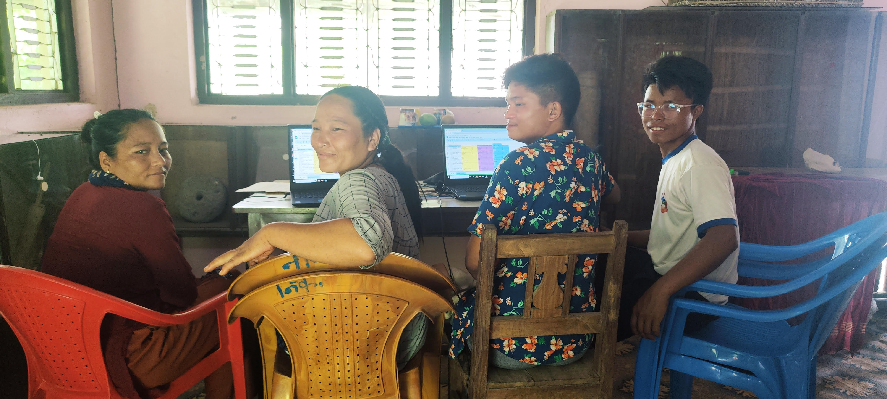
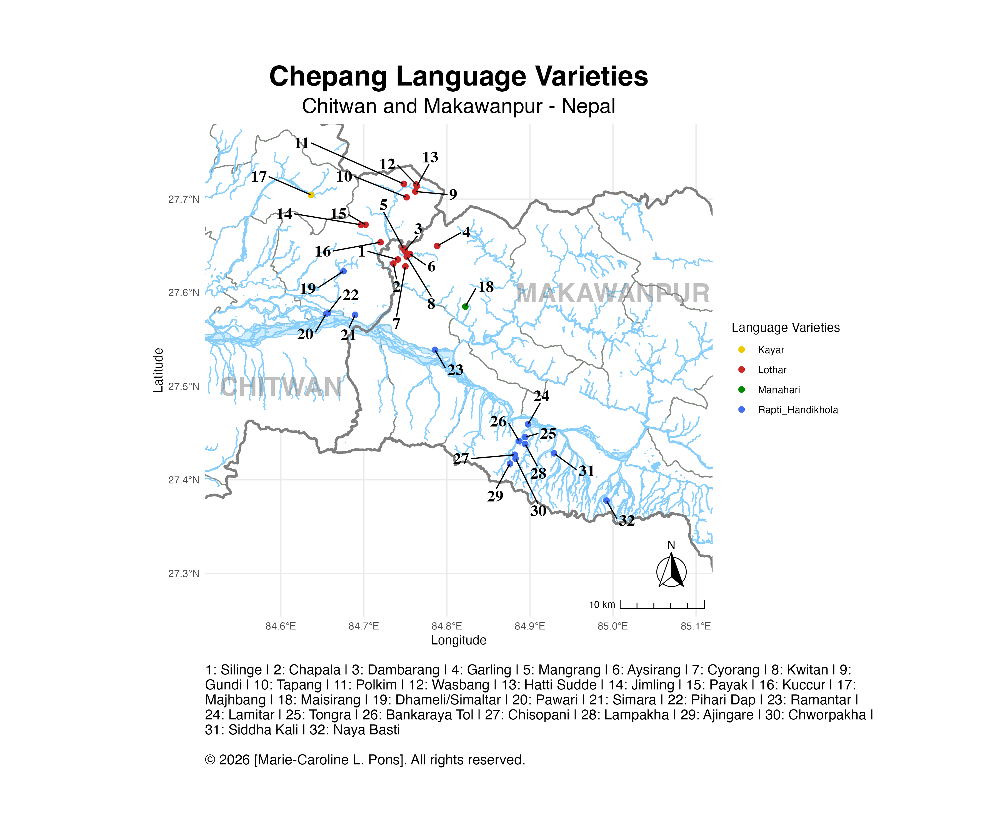

Chepang Language Documentation and Description Project (CLDDP)
The CLDDP started in 2017 with the aim of documenting Chepang oral literature, culture, traditions and practices. Our goal is to preserve and share Chepang indigenous knowledge for future generations.
We have developed a Linguistic Corpus and a Trilingual Dictionary, alongside a first detailed description of the language's structures: The Chepang language: Phonology, nominal and verbal morphology – synchrony and diachrony of the varieties of the Lothar and Manahari Rivers (Pons, 2022).
Team & Collaborations
- Project Managers: Pabitra Chepang, Santosh Praja and Marie-Caroline Pons
- Corpus Team: Pabitra Chepang, Santosh Praja and Marie-Caroline Pons
- Dictionary Team:
- Editors: Pabitra Chepang, Santosh Praja, Kripa Chepang, Ram Kumar Chepang, Sheela Chepang and Marie-Caroline Pons
- Script Development: Matt Stave and Surya Aaditya
- Legacy Documentation:
Since 2023, we are collaborating with anthropologist Dr. Kenichi Tachibana (Kyoto University) to transcribe and translate recordings of the Kayar variety collected since the 1980's.

Kripa Chepang, Pabitra Chepang, Santosh Praja, Ram Kumar Chepang
Chepang Language Corpus
Our team curated a Corpus comprising over 45 hours of audio and video recordings. This collection represents four Chepang language varieties: Lothar, Manahari, Kayar and Rapti/Handikhola (See Map).
To date, more than 120 speakers from 32 villages have contributed their stories, knowledge, wisdom, and linguistic heritage with us.
Multimodal Chepang Digital Dictionary
(Trilingual Chepang-Nepali-English)
Our dictionary will soon be accessible online via the Living Dictionaries platform of the Living Tongue Institute.
- 4000+ lexical entries
- With recorded words, example sentences and pictures

Map of Chepang language varieties covered by the project.
Learn More and Connect
Grants, Awards & Funding
The CLDDP's research has been made possible through the generous support of the following institutions:
- 2023–2025 | Grants-in-aid for Scientific Research. Cultural Anthropology and Folklore. JSPS.
- 2023 | Language Legacies, Endangered Language Fund (ELF)
- 2021 | Graduate Student Research Award, Linguistics Department, University of Oregon
- 2019 | Documenting Endangered Languages, National Science Foundation NSF-DEL Dissertation Improvement Grant
- 2019 | Oregon Humanities Center Graduate Research Support Fellowship, University of Oregon
- 2019 | Special “Opps” Travel and Research Award, University of Oregon
- 2019 | College of Art and Science Continuing Student Scholarships and Fellowships, University of Oregon
- 2018 | Global Oregon Graduate Research Award, University of Oregon
- 2017 | Center for Asian and Pacific Studies Small Professional Grant, University of Oregon